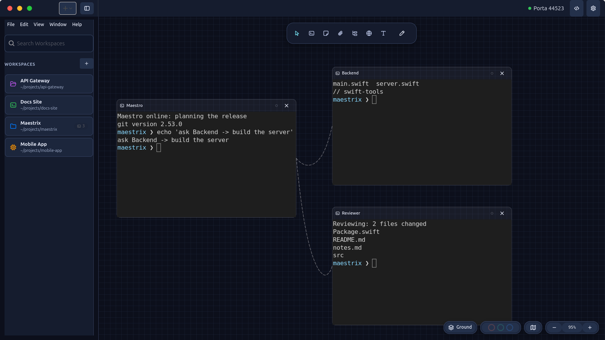
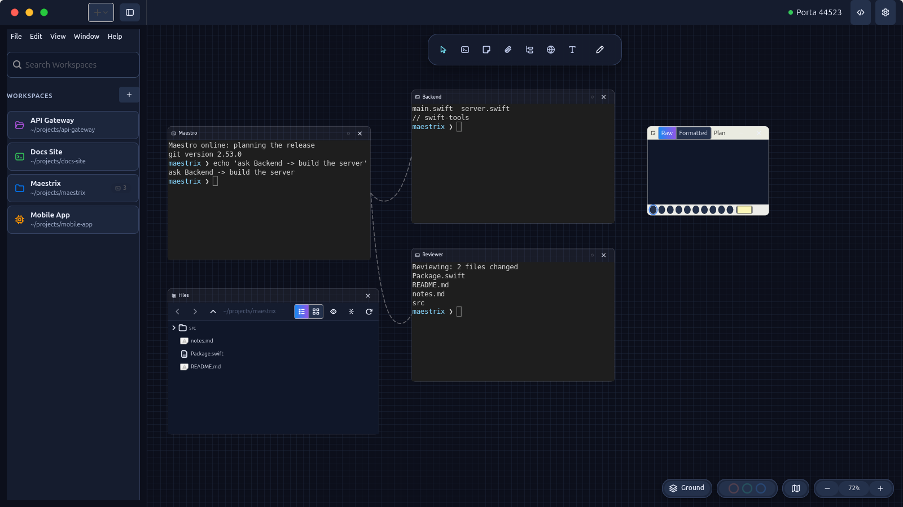

Maestrix
The multi-agent AI orchestration canvas for Linux. Manage agents like a team, not a pile of terminals.

One canvas for every agent
Maestrix is not an agent. It is the workspace around the agents you already use: Claude Code, Codex, Gemini CLI, Antigravity, OpenCode, or a plain shell.
Infinite canvas
Terminals, Markdown notes, file trees, browsers, labels and drawings, joined by physics-based ropes.
›_Real terminals
VTE terminals owned by a background server, so a workspace switch never kills a running shell.
⇄Agents talk to agents
omaestri ask lets connected agents delegate and answer, with no human router in between.
Maestro Mode
A lead agent recruits, connects, briefs and dismisses teammates by itself.
⎇Floors
Isolated git worktrees per task, with setup, run and teardown hooks, and a Land action.
⌁Remote SSH
Open a workspace whose terminals run on a remote machine, in the folder you pick.
Delegate from the command line
Every connected terminal gets the omaestri CLI. Agents see their neighbours and hand work over directly.
omaestri list omaestri ask "Reviewer" "Review my PR" omaestri check "Builder" omaestri note write "Spec" "content" omaestri recruit "Helper" --preset claude_code
Permissions follow the ropes you draw. Two terminals that are not connected cannot see each other.
Dark by default, light when you want it
The interface theme follows the app icon: navy ground, a blue to purple gradient and cyan highlights.


Documentation
Getting started
Install the .deb or build from source, then create your first workspace.
Configuration
Data directory, preferences, environment variables and the files Maestrix writes.
Troubleshooting
Offline mode, a missing server, stale sockets and agents that cannot reach each other.
Development
Build, run the tests, repository layout and packaging.